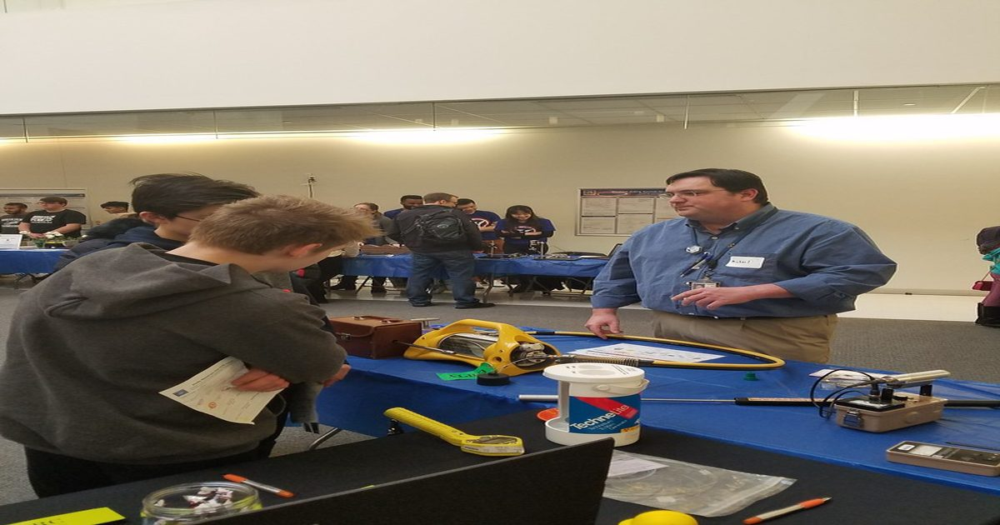

Майнилский инцидент: как произошел повод для Зимней войны
26 ноября 1939 года обстрел советского поселка Майнила стал официальным предлогом для начала боевых действий против Финляндии. Историки до сих пор обсуждают детали произошедшего и роль этого эпизода в решении руководства СССР.
Хронология событий и официальная версия
Согласно советским сообщениям, в 15:45 26 ноября финская артиллерия вела огонь по участку границы близ Майнила. В результате обстрела погибли четыре воина и ранены девять человек. Советское руководство тут же обвинило Финляндию в намеренной провокации и потребовало отвести войска на 20–25 километров от границы.
Финское правительство категорически отрицало причастность к происшествию и предлагало создание совместной комиссии для расследования. Однако СССР отказался от предложения, разорвал пакт о ненападении и 30 ноября начал наступление. Официальная пропаганда представляла инцидент как акт агрессии со стороны Хельсинки.

Версия о собственной провокации
Уже в послевоенное время исследователи обратили внимание на несоответствия в официальном рассказе. Траектория снарядов, отсутствие финских батарей в зоне поражения и заранее подготовленные дипломатические ноты наводили на мысль об инсценировке. Некоторые мемуаристы утверждали, что огонь вела своя артиллерия с советской территории.
В 1990-х годах были опубликованы документы, подтверждающие, что обстрел был организован НКВД для создания казуса белли. Порядок дал Лаврентий Берия с ведома Сталина. Финляндия действительно не имела артиллерии в указанном секторе, а расчеты вели огонь по своим позициям.

Показания летчика и расследование
Важным свидетельством стало интервью летчика Михаила Мельтюхова, данное уже в новейшее время. Он рассказал, что 26 ноября выполнял разведывательный полет над районом Майнила и не заметил никакой финской артиллерийской активности. По его словам, взрывы происходили на советской стороне линии.
Пилот также отметил, что перед вылетом экипажу дали указание не фиксировать детали обстрела в бортовых журналах. Это свидетельствует о заранее спланированном характере операции и попытках скрыть истинную картину происходящего от собственных военнослужащих.
Исторический контекст и последствия
Майнилский инцидент вписывался в логику внешней политики СССР конца 1930-х: стремление сдвинуть границу на северо-западе, обеспечить безопасность Ленинграда и получить военные базы. Дипломатические переговоры о обмене территориями зашли в тупик, и руководство выбрало силовый сценарий.
Зимняя война длилась 105 дней и закончилась Московским мирным договором. СССР получил Карельский перешеек и право на базу в Ханко, но потерял международную репутацию и был исключен из Лиги наций. Инцидент у Майнила остается классическим примером использования пограничного инцидента для запуска большой войны.
Как самостоятельно проверить исторические версии о Майниле
При изучении вопроса о Майнилском инциденте стоит обратиться к архивным фондам: отчетам пограничных частей, перехватам радиообмена, протоколам допросов пленных. Специалист-архивист или историк-исследователь поможет сориентироваться в фондах РГВА и ЦАМО, объяснит порядок доступа к нераскрытым документам и укажет на особенности советской военной переписки 1939 года. Важно сравнивать данные из разных источников — советские, финские, немецкие и шведские перехваты радиограмм — чтобы выявить расхождения в хронологии и формулировках.
Результат независимого анализа зависит от критического подхода к мемуарам участников, написанных десятилетиями позже, и от умения отличать официальные доклады от оперативной переписки в реальном времени. Исследователю не подойдет подход, при котором выбираются только удобные цитаты, игнорируя контекст подготовки к войне и планов КА против Финляндии. Комплексная работа с картографическими материалами, метеоданными ноября 1939 года и баллистическими расчетами позволяет восстановить картину событий без привязки к идеологическим нарративам любой из сторон.
Коротко: Майнилский обстрел был сфабрикован советским руководством для оправдания нападения на Финляндию. Документы и показания очевидцев подтверждают версию о собственной провокации.
Как вы считаете, возможно ли объективное историческое расследование подобных эпизодов без доступа к закрытым архивам?